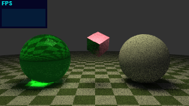
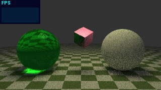
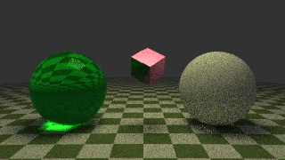
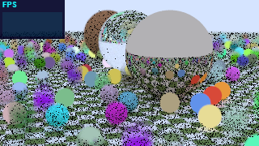
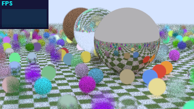
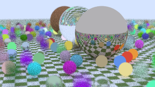
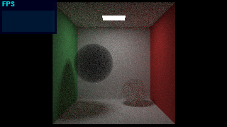
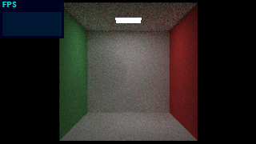
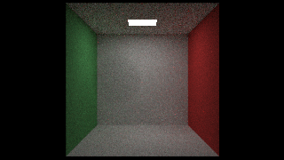

320 × 180; 55 accumulated samples including warmup. Original 24ad391; corrected 874466a; optimized 365e3cd. Correctness fixes and changed random paths can change the image. These examples accompany analytic and statistical checks; they are not pixel-equality tests.









The original Bouncing Spheres radiance contains invalid values; black regions are retained as evidence. Corrected and optimized output is finite. Fog changes follow the corrected physical distance and light PDFs.